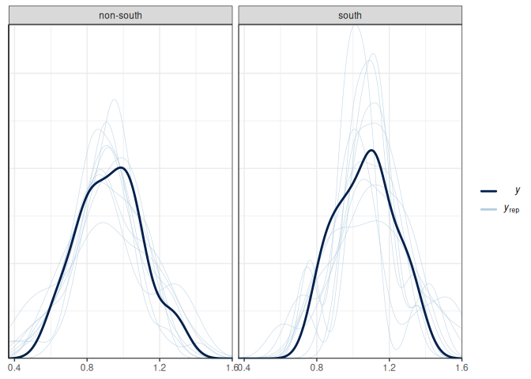
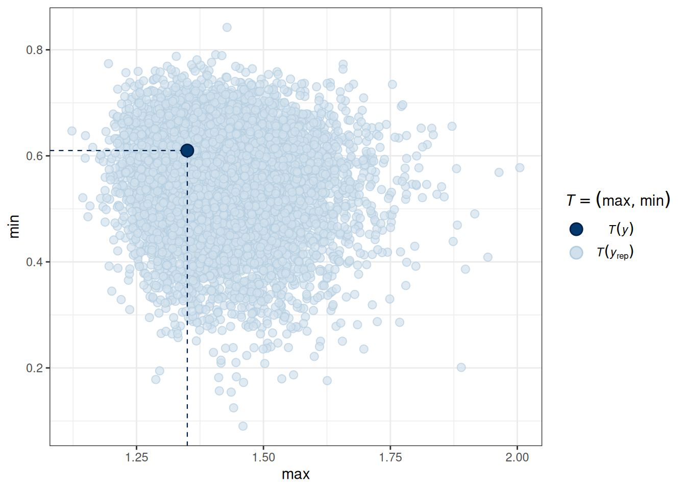
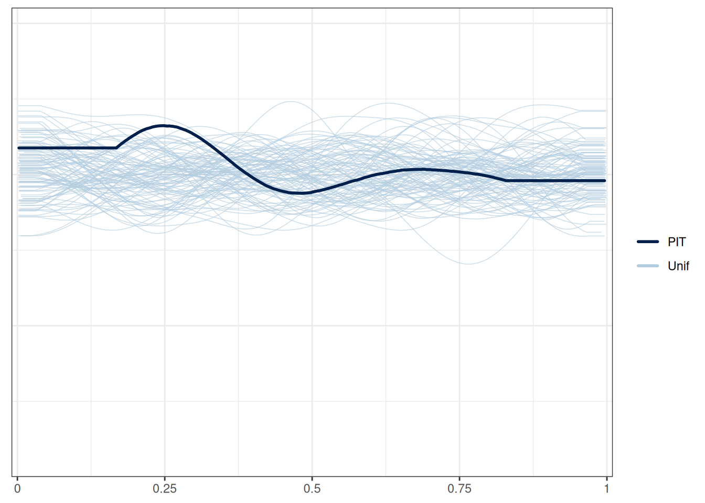

10 Model Diagnostics
All statistical models are sets of assumptions about the data-generating process, and estimation will be meaningless or misleading if these assumptions do not hold for the data. As we have discussed, choosing a good model is generally more important than choosing a good prior. In this note, we will learn some tools to check the validity of linear models. Most of them are similar to what you have learned in frequentist regression.
10.1 Assumptions of Linear Models
The assumptions of the linear model is encoded in the model. The model is
\[ \begin{aligned} Y_i & \sim N(\mu_i, \sigma) \\ \mu_i & = \beta_0 + \beta_1 X_{1i} + \beta_2 X_{2i} + \ldots \end{aligned} \]
From the model, we have the following assumptions, in the order of the most important one to the least important one:
- Correct specification of the model. This means that all relevant predictors for \(Y\) have been included in the model. This is probably an assumption that is never satisfied in real data analysis, as one can never include all relevant factors that can have an impact on \(Y\), be it small or large. However, it is important to be thoughtful to include major predictors that have been shown to relate to \(Y\). Leaving out key predictors can bias the coefficients \(\beta\).
- Linearity. This is about the conditional mean, \(\mu = E(Y | X_1, X_2, \ldots)\), being a linear function. If you have a function like \(\mu = \exp[\beta_1 X_1 \sin (\beta_2 X_2)]\), the conditional mean is not a linear function. Note that linearity does not require \(\mu\) to be a linear function of predictors; quadratic and exponential relationships, interaction, and polynomials can all be handled by linear models. (And technically, linearity requires \(\mu\) to be a linear function of the coefficients.)
- Independent observations. This assumption is not directly encoded in the model equation above, mainly because I omit that part when writing out the model. This assumption requires that the value of one observation is independent of the value of another observation after taking into account the conditional mean, \(\mu\). This will be discussed more in multilevel models.
- Equal variance of errors. This means that \(\sigma^2\) has to be constant for each observation. In general, Violating this assumption is generally a minor issue, although it can affect the posterior standard deviation (analogous to standard errors).
- Normality. This requires that the conditional distribution of \(Y\) is normal. Violating of the normality assumption generally does not affect the estimation of the coefficients, and will be a minor issue when the sample size is large enough (> 30) and when the degree of nonnormality is small to moderate.
10.2 Diagnostic Tools
Now let’s review some tools for regression diagnostics for Bayesian regression. There are hundreds of plots available that I will not cover here, and you can treat what is discussed in this note as a minimal requirement for regression diagnostics. The first one is about a correct specification of the model, which can be partly assessed with posterior predictive check.
10.2.1 Posterior Predictive Check
We’ve already seen a few examples of posterior predictive checks in the previous chapters. Continuing with the example of predicting the divorce rate, here are a few more plots.
Below is the posterior predictive graphical check for the interaction model we fit for the state-level divorce rate data:
Based on the graphical check, we do not see any major systematic discrepancies between the distribution of our data and what can be predicted from our model. The ribbon plot shows that some points are outside the 90% predictive intervals but not too far off.
We should do the posterior predictive check with test statistics too. The following functions show the mean, maximum value, and minimum value of the outcome.
# PPC for the mean (it should always fit)
pp_check(m_inter, type = "stat_grouped", stat = "mean", group = "South")Using all posterior draws for ppc type 'stat_grouped' by default.`stat_bin()` using `bins = 30`. Pick better value with `binwidth`.# PPC for the mean (it should always fit)
# PPC for the maximum and minimum values
pp_check(m_inter, type = "stat_2d", stat = c("max", "min"))Using all posterior draws for ppc type 'stat_2d' by default.

10.2.2 Marginal model plots
To check the linearity assumption, we need to ensure that the conditional mean of \(Y\) fits according to the model. A marginal model plot compares the model predicted relationship between the outcome and each predictor, and the relationship obtained using nonparametric methods with smoothing.
pp_check(m_inter, type = "intervals_grouped",
x = "MedianAgeMarriage", group = "South") +
geom_smooth(se = FALSE, col = "blue") +
geom_smooth(aes(y = y_obs), se = FALSE, col = "red", linetype = "dashed")Using all posterior draws for ppc type 'intervals_grouped' by default.`geom_smooth()` using method = 'loess' and formula = 'y ~ x'Warning: The following aesthetics were dropped during statistical transformation: ymin,
ymax
ℹ This can happen when ggplot fails to infer the correct grouping structure in
the data.
ℹ Did you forget to specify a `group` aesthetic or to convert a numerical
variable into a factor?
The following aesthetics were dropped during statistical transformation: ymin,
ymax
ℹ This can happen when ggplot fails to infer the correct grouping structure in
the data.
ℹ Did you forget to specify a `group` aesthetic or to convert a numerical
variable into a factor?`geom_smooth()` using method = 'loess' and formula = 'y ~ x'Warning: The following aesthetics were dropped during statistical transformation: ymin,
ymax
ℹ This can happen when ggplot fails to infer the correct grouping structure in
the data.
ℹ Did you forget to specify a `group` aesthetic or to convert a numerical
variable into a factor?
The following aesthetics were dropped during statistical transformation: ymin,
ymax
ℹ This can happen when ggplot fails to infer the correct grouping structure in
the data.
ℹ Did you forget to specify a `group` aesthetic or to convert a numerical
variable into a factor?# Alternative code
# plot(
# conditional_effects(m_inter,
# effects = "MedianAgeMarriage",
# conditions = data.frame(South = c("south", "non-south"),
# cond__ = c("South", "Non-South"))
# ),
# plot = FALSE
# )[[1]] +
# # Add data points
# geom_point(
# data = m_inter$data,
# aes(x = MedianAgeMarriage, y = Divorce),
# inherit.aes = FALSE
# ) +
# # Add smoother
# geom_smooth(
# data = m_inter$data,
# aes(x = MedianAgeMarriage, y = Divorce),
# col = "red", linetype = "dashed",
# inherit.aes = FALSE,
# se = FALSE) +
# facet_wrap(~ South)Marginal model plots are more appropriate for ordinal or continuous predictors. As you can see above, the red line (for nonparametric fit) and the blue line (from the linear model) fit the data well, but not for the left tail area, where some of the non-Southern states have lower divorce rates than predicted. If the linearity assumption holds, these two lines should be very similar. Generally speaking, deviations in the middle indicate a strong misspecification that needs to be fixed.
Also, we want to check outliers that lie way outside the predictive interval. With a 95% predictive interval, we generally expect 5% to lie outside of the predictive interval band. In this example, we don’t see a great problem with outliers.
10.2.2.1 LOO PIT plots
Here’s a check using probability integral transform. Roughly speaking, you can think of it as a flattened version of the marginal model plots, where you’d like to see the darkened line be relatively flat and within the range of the model prediction.
pp_check(m_inter, type = "loo_pit_overlay")Using 10 posterior draws for ppc type 'loo_pit_overlay' by default.Warning: Not enough tail samples to fit the generalized Pareto distribution in some or all columns of matrix of log importance ratios. Skipping the following columns: 1, 2, 3, 4, 5, 6, 7, 8, 9, 10, ... [40 more not printed].Warning: Some Pareto k diagnostic values are too high. See help('pareto-k-diagnostic') for details.Warning: Not enough tail samples to fit the generalized Pareto distribution in some or all columns of matrix of log importance ratios. Skipping the following columns: 1, 2, 3, 4, 5, 6, 7, 8, 9, 10, ... [40 more not printed].Warning: Some Pareto k diagnostic values are too high. See help('pareto-k-diagnostic') for details.NOTE: The kernel density estimate assumes continuous observations and is not optimal for discrete observations.
10.2.3 Residual plots
For regression analyses, one can learn a lot about model fit from the residuals, which is \(y_i - \tilde{y}_i | \theta\), i.e., subtracting the observed \(y_i\) values by the posterior predictions. Because in Bayesian, there is not just one predicted value, but a whole predictive distribution, one also has an entire posterior distribution for each residual. Figure 10.5 is a check of the average residual \(Y\) (i.e., \(Y\) - \(\hat Y\)) and the true value of \(Y\). If the model fit the data well, the points should be scattered with no specific pattern, like in Figure 10.5.
No big problem was found in the residuals. If you see that the SD of the residuals is not uniform, or the residuals have some non-linear relationships with the predictor, there can be some problems.
10.2.4 Multicollinearity
Strictly speaking, multicollinearity is not an assumption of regression. However, especially in frequentist analysis, having predictors that are strongly correlated can increase the uncertainty of the posterior distributions of the regression coefficients. On the other hand, the use of the prior distribution in Bayesian analyses can somewhat come to the rescue, as it makes it less likely for the posteriors to have extremely large posterior mean and standard deviation
You can look at the posterior density of the coefficients to see how correlated they are:
pairs(m_inter,
variable = "^b", # for all variables starting with b
regex = TRUE,
off_diag_args = # arguments of the scatterplots
list(
size = 0.5, # point size
alpha = 0.25 # transparency
)
)If some coefficients are particularly strongly correlated, you may need to think about using a stronger prior or combining some predictors. In this case, the collinearity is a result of the interactions. Principal component and factor analysis are some approaches for that.
10.3 Other Topics
There are other topics we have yet to discuss here for diagnostics of multiple regression, but are just as important, including:
- Transformation (e.g., logarithm transformation with skewed outcomes and predictors, like income);
- Leverage points and influential observations (e.g., hat values, Cook’s \(D\))
- Measurement error of predictors